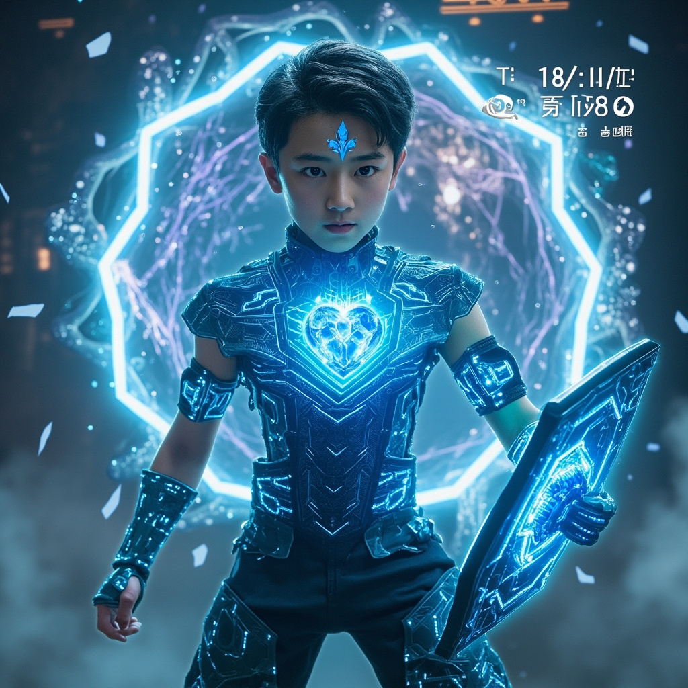

🎧 點擊播放有聲朗讀
傳送過程中，林塵的意識像被撕裂成無數碎片，每個碎片都在不同的維度間跳躍。數字元神的不穩定性在傳送中被放大，崩潰風險高達41%。但他放棄抵抗，轉而引導那些意識碎片按照自然韻律流動，奇蹟般地形成了穩定的光點網絡結構。
回到新長安城地下三百米的修煉室，林塵發現牆壁裂縫中湧出濃郁到近乎凝成實質的靈氣。靈芯系統3.0的全息界面顯示：空間裂隙直徑0.3毫米，正在以每秒0.1毫米的速度擴張，50分鐘後將完全開啟。高維能量波動來源不明，分析顯示與已知修真文明和科技文明均不匹配。
林塵雙手在空中劃出「大道編碼」的控制指令，修煉室自動化系統開始調配材料、刻錄符文、組裝納米單元。這項技術將修真符文刻錄在納米級機器人表面，使其能吸收、存儲、釋放靈氣。普通修真者無法操控如此多的納米單元，但林塵的數字元神正好具備這個能力。納米修真系統預計45分鐘完成。

林塵的另一部分意識透過數字元神的跨維度感知，窺見裂隙另一邊是混沌空間，充滿狂暴能量和敵意意識。敵意意識體意圖入侵、佔領、同化。納米修真系統構建進度15%，空間裂隙擴張進度30%，倒計時開始。林塵站在修煉室中央，全部意識投入到分析裂隙性質和構建防禦系統兩項任務中。
林塵站在實驗室門口望向夜空，城市的霓虹燈光在眼中映出複雜倒影。他從接入艙走出，手中握著通天塔設計圖的實體備份。七位協助者的名單已在意識中展開，而「天機閣」正在暗中行動。他深吸一口氣，踏出實驗室。一顆流星劃過天際，預示著即將到來的重大轉變。